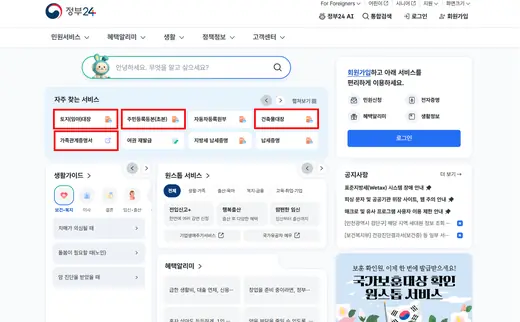
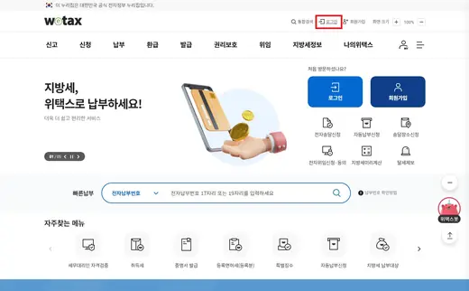
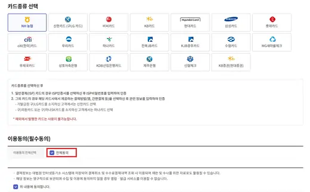
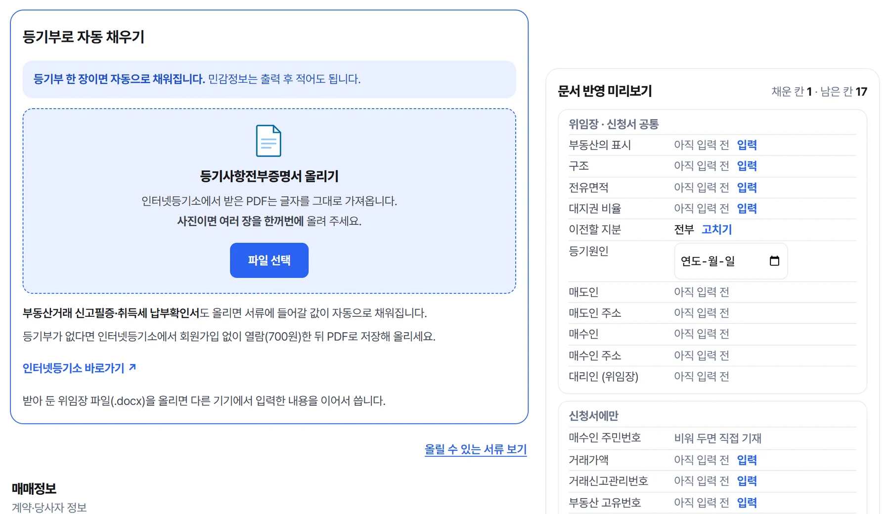

법무사 없이 하는 소유권이전등기 셀프등기몇 가지만 답하면,
내 등기 계획이 나와요
내 집값이면 법무사 보수가 얼마인지, 신청 기한은 언제까지인지 바로 확인할 수 있습니다.
- 가입 없이 바로 확인
- 주민등록번호는 저장하지 않습니다
- 등기소는 단 한 번
※ 법무사 보수는 기본보수 상한(대한법무사협회 보수기준 별표 2026. 8. 20. 개정 기준, 실비·부가세 별도)으로 계산합니다 · 실제 견적은 법무사마다 다릅니다
어떤 일로 오셨어요?
집값은 얼마예요?
대략이어도 괜찮아요.
법무사에게 맡기면 보수가 약 1,200,000원이에요.
잔금일은 언제예요?
잔금일부터 60일 안에 신청해야 해요.
내 등기 계획이에요
등기부 한 장으로 채우는
위임장·신청서
부동산의 표시, 전유면적, 대지권 비율. 한 글자씩 옮겨 적지 않아도 됩니다. 관할 등기소도 주소로 찾아 넣습니다.
예시 화면 · 완성된 위임장·소유권이전등기신청서는 Word 파일로 내려받습니다. 최종 확인은 관할 등기소 안내를 따라 주세요.
- 부동산의 표시
- 견본아파트 101동 1001호
- 구조
- 철근콘크리트구조
- 전유면적
- 84.97㎡
- 대지권 비율
- 43210분의 52.8
- 매도인
- 홍길동
- 관할 등기소
- 주소로 자동 입력
한 페이지로 보는 셀프등기 가이드
정부24 · 위택스 · 은행 · 인터넷등기소에서 할 일을 화면으로 보며 순서대로 따라 할 수 있습니다.
- 서류 준비정부24 · 인터넷등기소 · 등기부를 올리면 서류 칸이 채워집니다
- 세금·채권 납부취득세 신고·납부(위택스) · 국민주택채권 매입(은행) · 등기신청수수료 납부(인터넷등기소)
- 위임장 날인잔금일 현장 · 매도인 인감 날인을 받습니다
- 신청서 접수관할 등기소 방문 · 서류를 내면 끝납니다. 방문은 한 번입니다
잔금일부터 60일 안에 신청해야 하고, 기한을 넘기면 과태료가 부과될 수 있습니다. 취득세는 등기 접수 전까지 내야 합니다.



양식 직접 작성과
셀프등기24의 차이
같은 등기부로 양식을 직접 내려받아 작성할 때와 비교했습니다.
양식을 직접 작성할 때
셀프등기24로 작성할 때
부동산의 표시를 등기부에서 한 글자씩 옮겨 적습니다
등기부를 올리면 그대로 채워집니다
어느 칸에 무엇을 적는지 직접 공부해서 채웁니다
전유면적·대지권 비율·지분을 읽어 채웁니다
관할 등기소가 어디인지 따로 확인합니다
주소만 넣으면 관할 등기소를 찾습니다
공동명의는 신청서를 직접 나눠 써야 합니다
신청서 부수를 예규에 맞게 나눕니다
빠뜨린 항목은 등기소에서 알게 됩니다
반려·각하 사유와 대조해 접수 전에 알립니다

※ 비교 대상은 법무사에게 맡기는 경우가 아니라, 직접 신청을 택하고 양식을 내려받아 작성하는 경우입니다. 최종 확인은 관할 등기소 안내를 따라 주세요.
요금
가이드와 계산기는 무료입니다. 서류를 내려받을 때 한 번만 결제합니다.
위임장 · 소유권이전등기신청서 · 매매목록(해당 시) 자동완성 (Word 파일). 공동명의(각 2인까지)도 결제는 한 번입니다.
- 같은 부동산·같은 매수인은 결제일부터 30일 이상 재발급 무료
- 문서 오류 등 회사 귀책이면 전액 환불(이용약관 제6조)
- 추가 요금 없음 · 토스페이·네이버페이 결제
서비스 제공 방식과 시점 · 재발급 · 환불
- 제공 방식
- 브라우저에서 Word(.docx) 파일로 내려받습니다. 별도 배송이나 승인 대기가 없습니다.
- 제공 시점
- 위임장(증여는 증여계약서 포함)은 결제 승인 직후, 신청서는 제세공과금 납부 후 번호를 입력하는 즉시 내려받습니다.
- 재발급
- 결제일부터 30일(매매는 잔금일부터 14일이 더 늦으면 그날)까지, 동일 부동산·동일 매수인(증여는 수증인)에 한해 횟수 제한 없이 무상입니다. 결제 완료 화면의 재발급 링크로 이용하시며 별도 요청 절차는 없습니다.
- 환불
- 회사 귀책(문서 오류·미제공 등)은 사유를 안 날부터 7일 이내 요청하시면 3영업일 이내 전액 환불합니다. 디지털 콘텐츠 특성상 단순 변심에 따른 환불은 제한됩니다.
자세한 내용은 이용약관 제5·6조를 확인해 주세요.
늘어나는 본인 직접신청
당사자(본인) 직접신청 · 전 등기목적 · 법원 등기정보광장 「부동산등기 신청현황(신청인별)」 재구성 · 근저당 말소 등 전 등기목적 포함, 타관할통지 제외
이용자 후기 4.7
결제 이용자 후기 3건
정말 필요한 내용만 직관적으로 표현되어서, 다음달 소유권이전 시에 너무 큰 도움이 될 듯합니다. 다른 법무사분께 맡겨도 같은 서류로 받을듯 하네요^.^ 시간과 품 그리고 비용까지 아끼게 해주셔서 감사합니다! 대박나세요!!!
시험용 등기부 PDF로 사용하고 면적·대지권 비율·관할 등기소까지 자동으로 채워지는 것 확인한 뒤 진행했어요. 채권 계산부터 제출 순서 체크리스트까지 7단계로 안내돼서 처음인데도 어렵지 않았어요.
셀프등기 처음 해보는데 자동으로 작성해주고, 설명도 자세히 되어 있어서 서류 작성이 어렵지 않았습니다. 덕분에 법무사 비용 많이 절감했고, 주위에도 알려줄 생각입니다.
자주 묻는 질문
셀프등기, 정말 혼자 할 수 있나요?
부동산등기는 법무사 선임 의무가 없어 본인이 직접 신청할 수 있습니다. 셀프등기24는 서류 자동완성 도구와 단계별 절차 안내를 제공합니다. 개별 사안의 최종 확인은 관할 등기소 안내를 따라 주세요.
직접 하면 시간이 얼마나 드나요?
절차에 익숙한 정도에 따라 다릅니다. 서류 발급, 취득세 신고, 국민주택채권 매입 등 온라인으로 할 수 있는 일을 일찍 끝낼수록 줄어들고, 마지막에는 관할 등기소에 한 번 방문해 서류를 제출하면 됩니다. 셀프등기24는 단계별 가이드와 위임장·소유권이전등기 신청서 자동완성으로 정보를 찾아보고 확인하는 시간을 줄입니다.
잔금대출이 있어도 셀프등기가 가능한가요?
대출 은행이 허용해야 가능합니다. 잔금대출은 은행과 연계된 법무사가 근저당권설정등기를 맡는 것이 일반적이어서, 은행이 승인하지 않으면 소유권이전등기만 직접 하기는 어렵습니다. 대출을 신청할 때 셀프등기가 가능한지 은행에 먼저 문의하세요.
공동명의(부부 등)도 직접 신청할 수 있나요?
가능합니다. 절차는 단독명의와 같고, 신청서 부수·위임장·인감증명서·등기필정보 등 몇 가지가 달라집니다. 매도인과 매수인이 모두 2인 이상이면 신청서를 2부로 나눠야 하며, 한 장에 함께 적으면 수리되지 않습니다(등기예규 제1363호). 셀프등기24는 매도인·매수인 각 2인까지 공동명의 서류를 자동완성합니다. 달라지는 점은 공동명의 셀프등기 안내에서 확인하실 수 있습니다.
근저당권 말소도 직접 할 수 있나요?
대출금을 전부 상환해도 등기부 을구에 기록된 근저당권은 자동으로 지워지지 않아, 말소등기를 따로 신청해야 합니다. 직접 신청하면 공과금 실비만 들며, 등기 대상 1건 기준 11,200원입니다(등록면허세 6,000원 + 지방교육세 1,200원 + 등기신청수수료 4,000원, 서면 접수 기준). 은행은 대개 협약 법무사를 통한 말소를 안내하며 이 경우 대행 보수가 별도로 발생합니다. 절차와 준비서류는 근저당권 말소 가이드에서 무료로 확인하실 수 있습니다.
개인정보는 어떻게 처리되나요?
주민등록번호 등 민감정보는 서버에 저장하지 않으며, 문서 생성은 이용자 기기 안에서 이루어집니다. 민감정보를 기재하지 않아도 서류 생성이 가능하며, 빈칸은 출력 후 손으로 기재하시면 됩니다.
휴대폰으로 결제했는데 PC에서 인쇄할 수 있나요?
네. 결제 완료 화면에서 재발급 링크를 카카오톡 「나와의 채팅」이나 메일로 보내 두고 PC에서 열면, 입력 내용(주민등록번호 제외)과 결제가 함께 이어집니다. 링크는 결제일부터 30일(매매는 잔금일부터 14일이 더 늦으면 그날)까지 쓸 수 있고, 받아 둔 위임장 파일을 올려 이어서 할 수도 있습니다. 링크에 입력하신 정보가 담겨 있으니 본인만 보관해 주세요.
증여도 셀프등기로 할 수 있나요?
가족 간에 대가 없이 아파트를 넘기는 단순 증여라면 셀프등기24에서 증여계약서·위임장·소유권이전등기신청서를 자동완성할 수 있습니다(부동산 1건 14,900원). 증여계약서는 부동산이 있는 구청에서 검인을 받아 등기소에 냅니다. 대출·전세를 함께 넘기는 부담부증여, 미성년 수증인은 대상이 아니며, 증여세 신고는 수증인이 홈택스 또는 세무서에 직접 합니다.
어려워서 못하는 게 아닙니다.제대로 된 순서를 몰랐을 뿐입니다.
서류 작성 시작하기